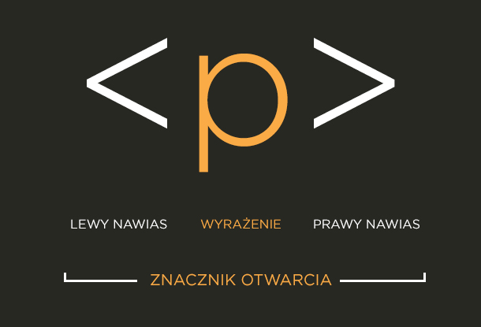

Podstawowe znaczniki HTML
Znacznik html to podstawowy element języka. Dzieli się je na znaczniki liniowe i blokowe.
https://how2html.pl/wp-content/uploads/2014/08/znacznik-otwarcia-html1.jpg
Spis treści
Podział znaczników
Znaczniki dzielą się na dwa typy, znaczniki blokowe np. <div> i znaczniki liniowe np. <a>, znaczniki blokowe służą do organizacji kontentu na stronie, zajmują maksymalną szerokość i wysokość większą o jedną linie u góry i na dole, natomiast znaczniki liniowe służą do umieszczania w nich zawartości (oczywiście z pewnymi wyjątkami w obu przypadkach) i zajmują tylko tyle miejsca ile w nich jest treści. Znaczniki HTML dzielą się także na pojedyńcze i podwójne, czyli na takie jak np <img> , <aside> </aside>, główna różnica, to sposób zamykania tagów, pojedyńczych nie trzeba zamykać, a podwójne mają swój końcowy znacznik ze znakiem /. Oznacza to że w znacznikach pojedyńczyk nie możemy umieszczać dodatkowiej treści, bo same w sobie ją zawierają, a w znacznikach podwójnych można umieszczać treść. Kolejny podział jest na znaczniki semantyczne i nie semantyczne. Tu sprawa jest bardzo prosta, znaczniki semantyczne w swojej nazwie mają określone co robią, w przeciwieństwie do nie semantycznych, a ich przykłady to <table> <article>, <b>
Użycie znaczników
Cały HTML opiera się na odpowiednim używaniu znaczników, więc poznajmy kilka zasad, które należy stosować:
- Nie krzyżuj znaczników
<a><b></a></b> TAK NIE WOLNO - Zamykaj wszystkie znaczniki kontenerowe
<div></div>TAK TRZEBA <div> TAK NIE WOLNO - Pisząc znaczniki i ich atrybuty zawsze używaj małych liter
<a src="tresc"></a>TAK TRZEBA <A Src="TREŚĆ"></A> TAK NIE WOLNO - Używaj "" do wszystkich atrybutów:
<a src="tresc"></a>TAK TRZEBA <a src=treść></a> TAK NIE WOLNO - W treści strony stosuj encje zamiast znaków specjalnych(< = " <") tablica encji link
<znacznik> wypisanie znacznika używając encji nie można używać normalnych znaków mniejszości i większości, ponieważ parser może uznać to za znacznik do tworzenia treści na stronie!
Podstawowe znaczniki blokowe
Podstawowe znaczniki blokowe to:
1. <div>
2. <p>
3. <h1> - <h6>
4. <header>
5. <footer>
6. <nav>
7. <article>
8. <section>
9. <aside>
10. <main>
<div>: Jest to uniwersalny kontener blokowy, który służy do grupowania innych elementów i tworzenia sekcji na stronie.
<p>: Oznacza akapit tekstu.
<h1> - <h6>: Oznaczają nagłówki od najwyższego poziomu (najważniejszy) do najniższego poziomu (najmniej ważny). Przykładowo, <h1> to nagłówek pierwszego poziomu, a <h6> to nagłówek szóstego poziomu.
<header>: Reprezentuje nagłówek strony lub sekcji.
<footer>: Oznacza stopkę strony lub sekcji.
<nav>: Służy do oznaczania sekcji nawigacyjnej.
<article>: Oznacza niezależny fragment treści, na przykład pojedynczy post na blogu lub artykuł.
<section>: Reprezentuje sekcję na stronie, która może zawierać powiązane treści, takie jak grupa artykułów lub elementów.
<aside>: Oznacza treść poboczną, która jest związana z zawartością znajdującą się wokół niej, ale może być również niezależna.
<main>: Oznacza główną zawartość strony, która nie jest stopką, nagłówkiem, ani treścią poboczną.
Podstawowe znaczniki liniowe
Podstawowe znaczniki liniowe to:
1. <span>
2. <a>
3. <strong>
4. <em>
5. <br>
6. <hr>
7. <img>
8. <input>
9. <label>
10. <button>
<span>: Jest to znacznik używany do grupowania elementów w celu zastosowania wspólnych stylów lub manipulacji za pomocą JavaScriptu, nie wpływając na strukturę dokumentu.
<a>: Służy do tworzenia odnośników (linków) do innych stron internetowych, dokumentów lub lokalizacji w bieżącej stronie.
<strong>: Oznacza tekst jako ważny lub wyróżniony, zazwyczaj powoduje jego pogrubienie.
<em>: Oznacza tekst jako ważny lub akcentowany, zazwyczaj powoduje jego kursywę.
<br>: Tworzy przejście do nowej linii w tekście bez wprowadzania nowego bloku, jak to robi <p>.
<hr>: Tworzy poziomą linię (horyzontalną), która służy do oddzielenia zawartości na stronie.
<img>: Wstawia obraz na stronę.
<input>: Umożliwia użytkownikom wprowadzanie danych poprzez formularze. Może przyjmować różne typy, takie jak tekst, przycisk, pole wyboru itp.
<label>: Służy do powiązania opisu z elementem formularza, co ułatwia korzystanie z formularzy dla użytkowników.
<button>: Tworzy przycisk, który może być kliknięty w celu wykonania określonej akcji, takiej jak wysyłanie formularza lub uruchamianie skryptu JavaScript.